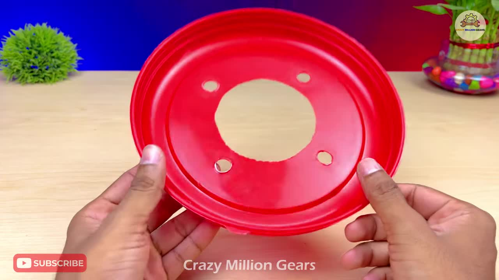
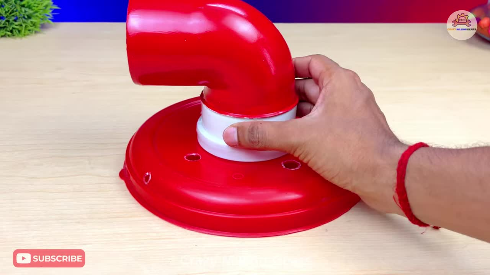
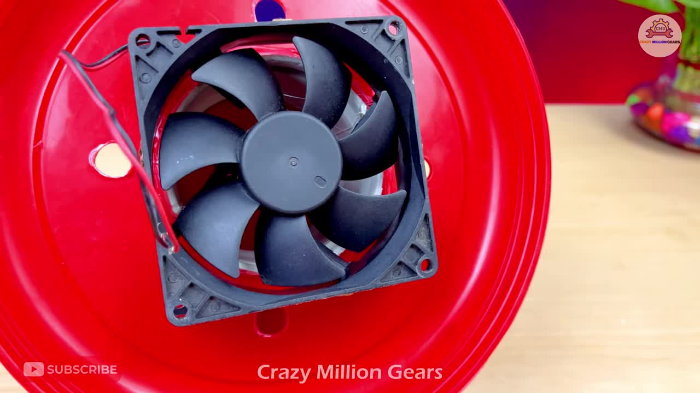
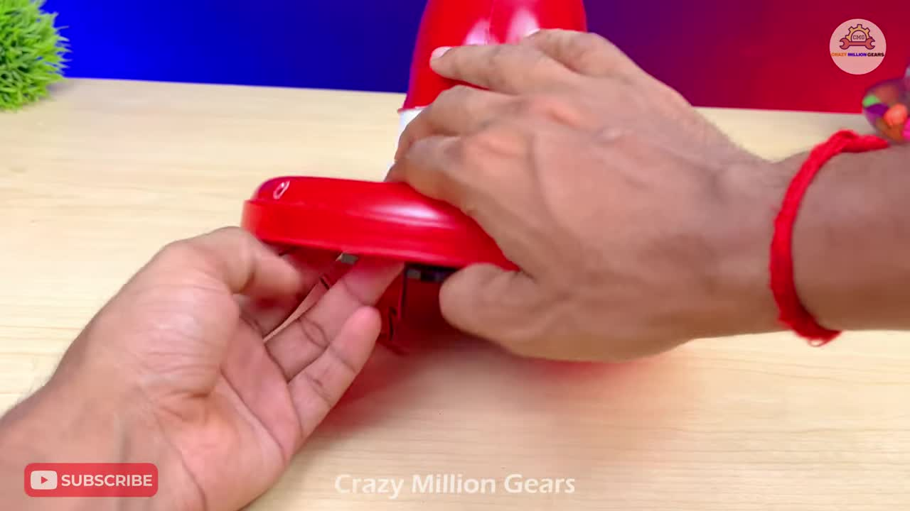
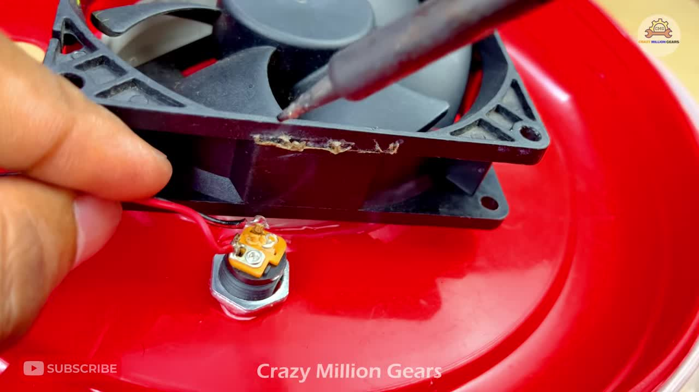
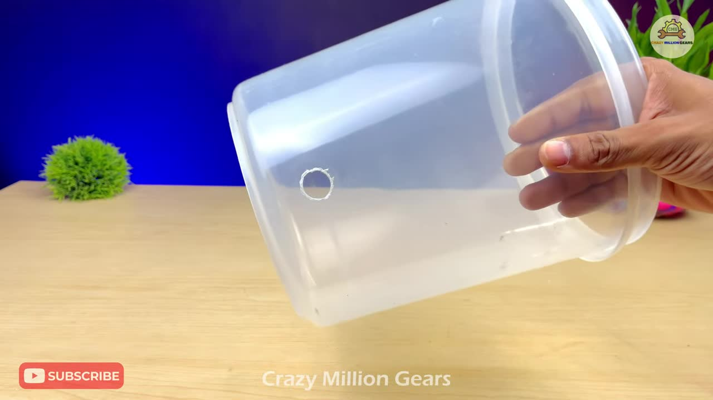
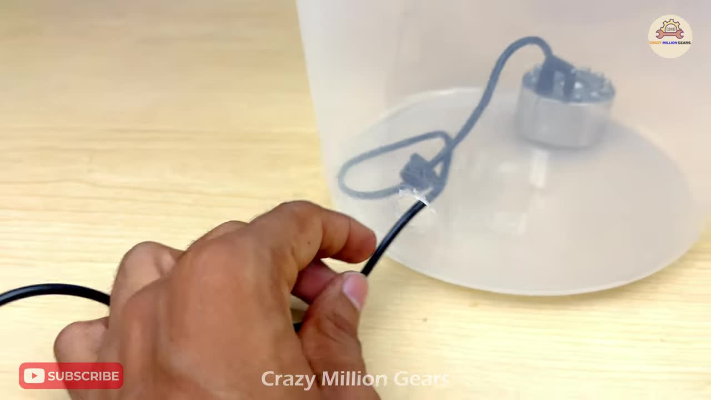
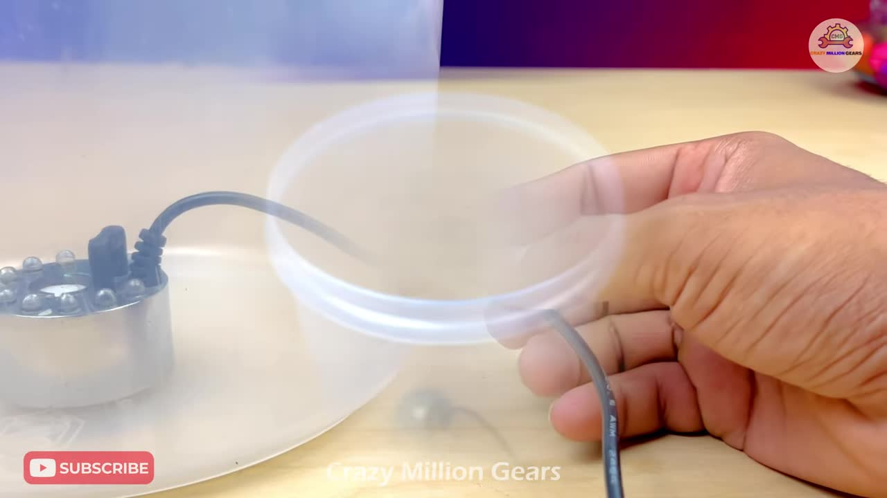
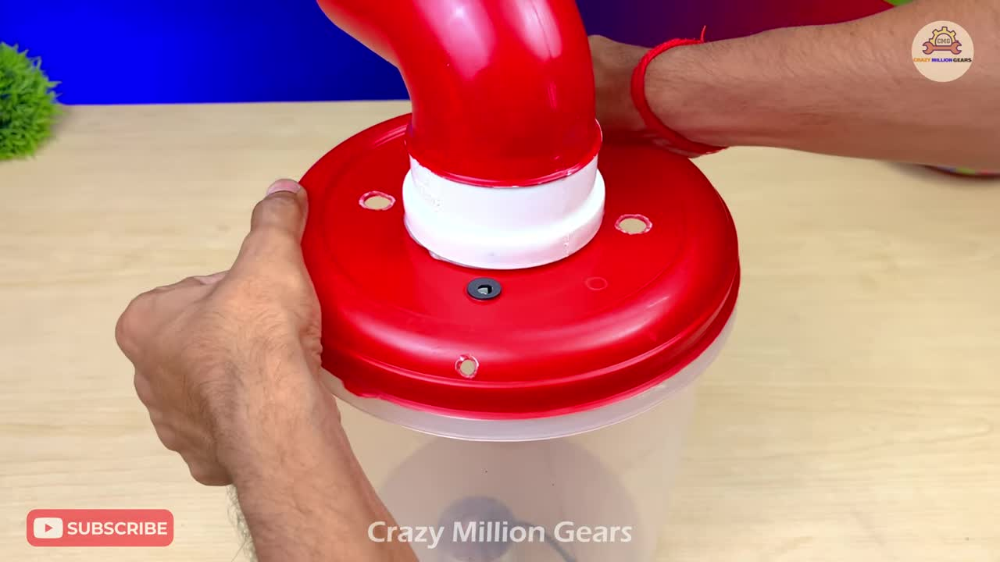
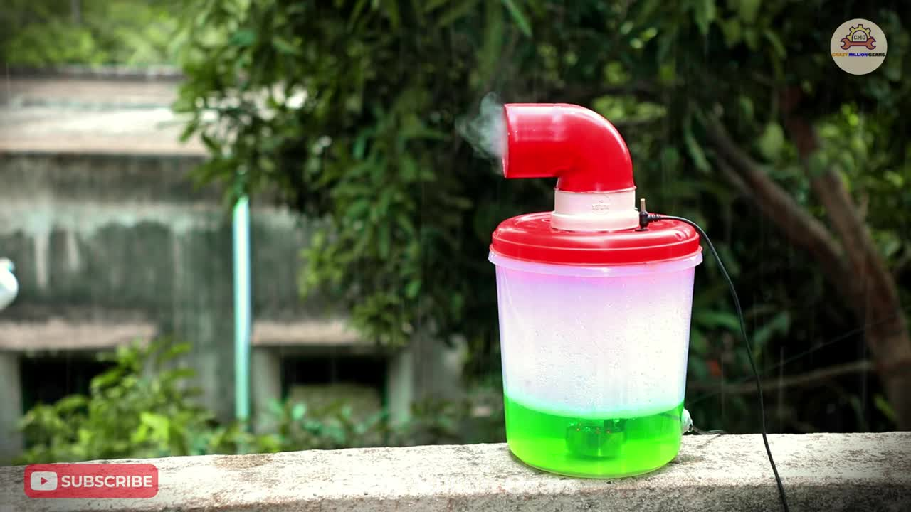

How to Make a Simple Ultrasonic Cool Mist Humidifier
这个DIY教程将向您展示如何利用日常用品和简单的电子元件，制作一个功能强大的超声波冷雾加湿器。它结构紧凑，易于组装，能有效增加室内湿度，或用于制造酷炫的雾化效果。
A simple and efficient DIY humidifier project using common household items and electronic components to create a cool mist ultrasonic humidifier.
DIY 项目
DIY Project
冷雾 输出
Cool Mist Output
低功耗 运行
Low Power Operation
易于 制作
Easy to Build
Materials Needed
Step-by-Step Instructions
在塑料容器的盖子中心挖一个适合白色PVC连接件的大孔，并在周围均匀打几个小孔作为进气口。
Cut a large hole in the center of the plastic lid to fit the white PVC connector and drill several smaller holes around it for air intake.
将红色PVC弯头与白色PVC连接件组合在一起。
Combine the red PVC elbow and the white PVC connector.
使用热熔胶将组装好的PVC部件牢固地固定在盖子中心的大孔上，确保密封。
Securely glue the assembled PVC part to the large central hole on the lid using hot glue, ensuring a tight seal.
将DC散热风扇固定在盖子的底部（内侧），使其叶片正对PVC连接件的开口，用于将雾气吹出。同样使用热熔胶固定。
Fix the DC cooling fan to the underside (inside) of the lid, positioning its blades directly under the PVC connector opening to blow out mist. Use hot glue to secure it.
在盖子上合适的位置打一个小孔，安装DC电源插座。
Drill a small hole in a suitable location on the lid and install the DC power socket.
将散热风扇的电线连接到DC电源插座上。红色线通常接电源插座的中心正极触点，黑色线接外部负极触点。使用电烙铁焊接牢固。
Connect the fan's wires to the DC power socket. The red wire typically connects to the center positive terminal of the socket, and the black wire to the outer negative terminal. Solder them securely using a soldering iron.
在塑料容器的侧面靠近底部的位置打一个小孔，用于引出雾化模块的电源线。
Drill a small hole in the side of the plastic container near the bottom to pass the mist maker module's power cable through.
将超声波雾化模块放入容器底部，通过侧面的小孔将电源线引出。确保模块可以完全浸没在水中。
Place the ultrasonic mist maker module at the bottom of the container, threading its power cable through the small hole on the side. Ensure the module can be fully submerged in water.
向容器中加入足量的水，至少要没过雾化模块的传感器部分。
Add sufficient water to the container, at least enough to cover the sensor part of the mist maker module.
将带有风扇和PVC部件的盖子盖到容器上，并连接外部12V电源。超声波雾化模块会产生雾气，风扇会将其从红色弯头处吹出。
Place the lid with the fan and PVC parts onto the container. Connect an external 12V power supply. The ultrasonic mist maker module will produce mist, and the fan will blow it out through the red elbow.
 How it Works
超声波雾化模块通过高频振动将水分子打散成微小的颗粒，形成冷雾。DC风扇则将这些雾气向上抽送并通过弯头引导出来。进气孔的设计保证了空气流通，使得风扇能够有效地吹出雾气。
The ultrasonic mist maker module uses high-frequency vibrations to break down water molecules into tiny particles, creating cool mist. The DC fan draws this mist upwards and directs it out through the elbow. The air intake holes ensure proper airflow for the fan to effectively expel the mist.
THANKS FOR WATCHING / READING
MY SUGGESTION | SUBSCRIBE | WATCH NEXT
FOR MORE DIY VIDEOS